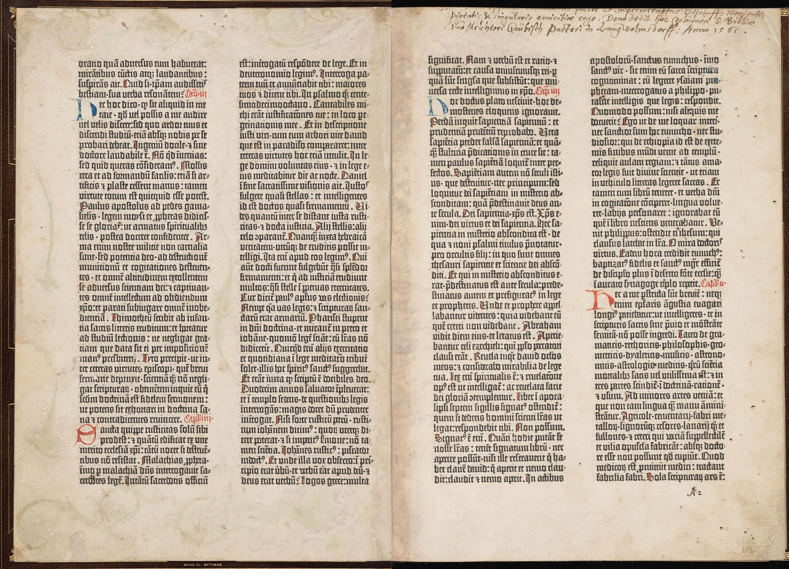
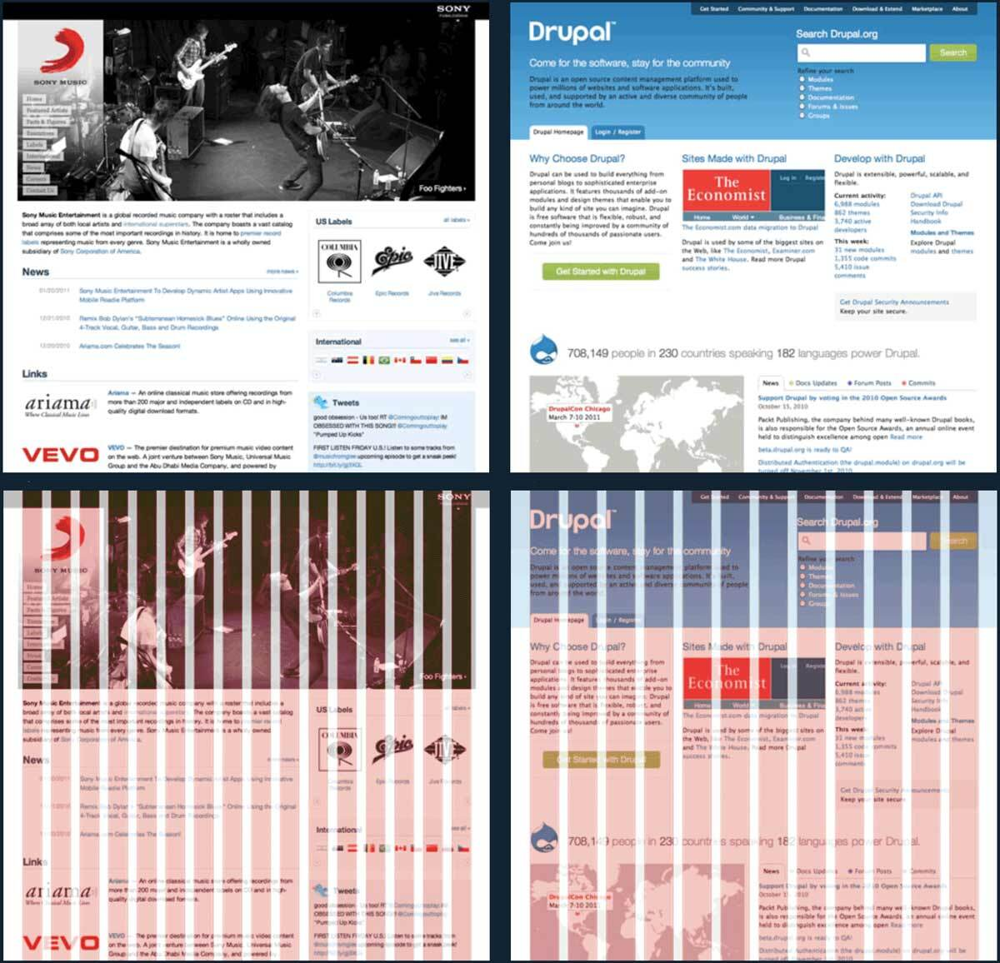

A grid is a system of horizontal and vertical lines that can guide layout choices. Grids have been part of page layout since the Gutenberg Bible. The pages below use a grid of four vertical and two horizontal lines.

In moderation, grids can be useful. But in the words of Dutch designer Wim Crouwel,
Grids are helpful when they encourage consistency. They make it easier to relate elements on the page to existing ones (a principle suggested in maxims of page layout). If your layout seems messy or aimless, move elements onto the grid.
Grids are not helpful when they create a false sense of security—I aligned everything to my grid, therefore my layout is solid. For instance, a few years ago, web designers were fixated on the 960 grid system. If it got people curious about grids, OK. But it also proved that if you take ugly shit and align it to a grid—it’s still ugly shit.

A few tips for using grids effectively:
Grids can guide positioning (= where an element goes on a page), sizing (= the height and width of an element), or alignment (= how two elements relate to each other). Grids can apply to visible elements (say, a text block) and invisible ones (say, page margins, space between paragraphs, or first-line indents).
A coarser, simpler grid encourages more consistency, because there are fewer ways to align items. A complicated grid, by contrast, might as well be no grid at all.
Grids don’t have to be rigid or symmetric—in fact it’s usually better if they’re not. For instance, in the Gutenberg spread above, the columns of text are the same height and width. But the margins within each page are all different.
Corollary: if you want to use mathematical ratios to set up your grid, fine. But these ratios don’t guarantee a good layout on their own. Rely on your eyes, not your calculator.
A grid can emerge from experimentation rather than being defined in advance. For instance, all the sample documents are built around simple grids. This is a consequence of organizing elements more consistently. But I don’t emphasize the grid-ness because I want readers to focus on typographic consistency (which is the end goal), not grids per se (which are merely a means to that end).
Not everything needs to go on the grid. For instance, with print or PDF projects, I often start with a pica grid (one pica = 12 pts). I use this to derive a coarser grid that controls the position and size of the text blocks. But if it turns out that a certain set of indents look right at 2.5 picas, I’m not going to freak out.
A
baseline grid is a special grid that restricts where the baseline of a line of text can appear. These grids are typically used in wide multi-column layouts (imagine a newspaper page) where uneven baselines would be distracting. In book or website layouts, however, I think baseline grids impose too much rigidity (and too much work) for too little benefit. I don’t use them.Fans of mathematical ratios in grids (also known as
modular scales ) sometimes compare them to music. For instance, Robert Bringhurst says“a modular scale, like a musical scale, is a prearranged set of harmonious proportions”. (The Elements of Typographic Style, p. 166.)As a musician, I find this metaphor incomplete. Sure, music is written on a grid of harmony and rhythm. But performers don’t rigidly adhere to these grids. Indeed, music that was locked perfectly to a grid would sound sterile and boring. Just as the performer’s ear is the ultimate judge of the music, the typographer’s eye is the ultimate judge of the page.